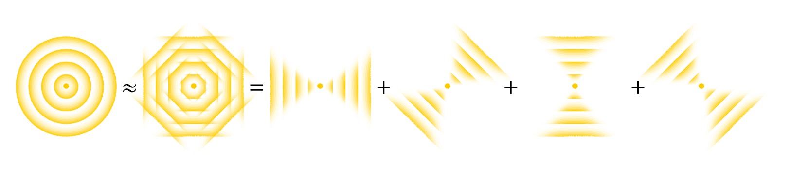

3.2.3 Free Particle Propagator#
Prompts
State the free 3D Schrödinger equation. What plane-wave ansatz solves it, and what dispersion relation \(\omega(\boldsymbol{k})\) does it impose?
How can a spherical wave from a point source be built by superposing plane waves in all directions, and why does momentum uncertainty force this?
Evaluate the Gaussian integral over \(\boldsymbol{k}\) to obtain the closed-form free propagator. Identify the prefactor and the phase.
Show that the phase of \(K_{\text{free}}\) equals \(S_{\text{cl}}/\hbar\). Why is this equality exact for the free particle but only approximate for general potentials?
Why does the propagator picture restore the classical image of a localized free particle that a single plane wave seems to lose?
Lecture Notes#
Overview#
In §3.2.2 we derived the Schrödinger equation from the path integral and pinned down the slice normalization. Two questions were left open: (i) the finite-time propagator was supposed to be assembled by stacking infinitely many slices — an unappealing program, and (ii) one might still worry whether the slice approximation is fine enough. We now solve the free-particle Schrödinger equation directly, build the propagator out of its plane-wave eigenmodes, and compute it in closed form. The result confirms the slice formula and reconciles the matter-wave picture with the classical particle picture.
Construct the Propagator#
From 1D to 3D#
The one-slice derivation in §3.2.2 generalizes immediately. In three dimensions the slice action involves \((\delta\boldsymbol{x})^{2}\) in place of \((\delta x)^{2}\), and the Gaussian integral factorizes into three independent Cartesian components. The resulting equation is
Free Schrödinger equation (3D)
Position vectors are denoted \(\boldsymbol{x} = (x_{1},x_{2},x_{3})\) and the Laplacian is \(\nabla^{2} = \partial_{1}^{2} + \partial_{2}^{2} + \partial_{3}^{2}\).
We work in 3D from now on; the 1D story specializes by suppressing two components.
Plane-Wave Eigenmodes and Dispersion#
The natural eigenmodes of \(\nabla^{2}\) are plane waves. Substitute the ansatz
into (85):
Identifying \(E = \hbar\omega\) and \(\boldsymbol{p} = \hbar\boldsymbol{k}\) via the de Broglie relations recovers the classical kinetic energy:
Free-particle dispersion
Plane Wave vs Spherical Wave#
A plane wave (86) carries sharp momentum \(\boldsymbol{p} = \hbar\boldsymbol{k}\): its wavefronts are infinite planes perpendicular to \(\boldsymbol{k}\), and the wave fills all space with a single direction of propagation. The propagator \(K(\boldsymbol{x},t;\boldsymbol{x}',0)\) describes the opposite geometry: at \(t = 0\) the wave is concentrated at the source point \(\boldsymbol{x}'\), then radiates outward with spherically symmetric wavefronts — a spherical wave.
The two pictures sit at opposite ends of the position-momentum trade-off:
Wave |
Position spread |
Momentum spread |
|---|---|---|
Plane wave (extended planar wavefront) |
\(\Delta\boldsymbol{x}\to\infty\) |
\(\Delta\boldsymbol{p} = 0\) |
Spherical wave (point-source wavefront) |
\(\Delta\boldsymbol{x} = 0\) |
\(\Delta\boldsymbol{p}\to\infty\) |
A spherical wave can be built by superposing plane waves traveling in all directions: each plane wave contributes its own straight wavefront, and their interference reinforces a single point at the center while cancelling everywhere else.
{kind=link}

Fig. 13 A spherical wave radiating from a point source (left) is approximated by a finite sum of plane waves traveling in different directions; the more directions one includes, the more isotropic the result. In the continuum limit, integrating over all directions of \(\boldsymbol{k}\) recovers the exact spherical wave.#
Each plane-wave component evolves with its own dispersion phase \(-\omega(\boldsymbol{k})\,t\). Superposing them with equal weight produces the propagator:
Free propagator from plane waves
At \(t = 0\) the integrand reduces to \(\mathrm{e}^{\mathrm{i}\boldsymbol{k}\cdot(\boldsymbol{x}-\boldsymbol{x}')}\) and the integral evaluates to \(\delta^{3}(\boldsymbol{x}-\boldsymbol{x}')\), the correct point source.
Closed Form by Gaussian Integration#
The integrand of (88) is Gaussian in \(\boldsymbol{k}\). Introduce the displacement and the dispersion coefficient
so the exponent is \(\mathrm{i}\,\boldsymbol{k}\cdot\boldsymbol{r} - \mathrm{i}\,\beta\,\boldsymbol{k}^{2}\). Completing the square in \(\boldsymbol{k}\) and performing the Gaussian integral gives
Free propagator (closed form)
Derivation: Gaussian \(\boldsymbol{k}\) integration
Complete the square in \(\boldsymbol{k}\) inside the exponent of (88):
Shift \(\boldsymbol{q} = \boldsymbol{k} - \boldsymbol{r}/(2\beta)\). The shifted quadratic factorizes into three Cartesian Gaussians; each contributes \(\sqrt{\pi/(\mathrm{i}\beta)}\) from the Fresnel formula (HW 3.2.2.1). Therefore
Substituting \(\beta = \hbar t/(2m)\) gives the prefactor \((m/(2\pi\mathrm{i}\hbar t))^{3/2}\), and combining with the surviving exponent \(\mathrm{i}\,\boldsymbol{r}^{2}/(4\beta) = \mathrm{i}\,m\,\boldsymbol{r}^{2}/(2\hbar t)\) yields (90).
Phase = Action (Exactly)#
For a free classical particle traveling from \(\boldsymbol{x}'\) to \(\boldsymbol{x}\) in time \(t\) at constant velocity \(\boldsymbol{v} = (\boldsymbol{x}-\boldsymbol{x}')/t\), the action along the straight-line trajectory is
The exponent of (90) is then exactly \(\mathrm{i}\,S_{\text{cl}}/\hbar\):
Phase = Action is exact for the free particle
Because the free-particle action is quadratic in the path, the Gaussian path integral can be evaluated exactly, and the classical action alone determines the phase of the propagator. For more general potentials this becomes the leading-order semiclassical approximation, which we develop in §3.3.
The Slicing Was Already Exact#
When we wrote down the slice propagator in §3.2.1 we left open the worry that taking only the classical slice action \(S_{\text{slice}}\) inside one slice would need refinement at smaller \(\delta t\). Compare (90) (specialized to 1D and with \(t\to\delta t\)) against the closed-form slice propagator (80) derived in §3.2.2: they are identical. The slice formula was exact, not approximate.
Self-consistency of the path integral
Composing many slices via (65) reconstructs the same closed form (HW 3.2.2.4). The path integral is internally self-consistent: arbitrarily fine slicing produces no new physics for the free particle.
The Plane-Wave Puzzle#
In quantum mechanics the free particle is described by a single plane wave that fills all of space — counterintuitive next to the classical picture of a localized particle moving in a straight line with constant velocity \(\boldsymbol{v}\). The propagator picture restores the classical image. Starting from a point at \(\boldsymbol{x}'\), the wave fans out, and its phase \(m\,(\boldsymbol{x}-\boldsymbol{x}')^{2}/(2\hbar t) = \tfrac{1}{2}m\,\boldsymbol{v}^{2}\,t/\hbar\) accumulates at exactly the rate set by the classical kinetic energy. The matter wave is the particle’s own propagator: each “wavelet” is the spreading amplitude radiated by the source point, and its phase ticks like the classical action.
Resolving the puzzle
The free particle in quantum mechanics is a plane wave because plane waves are momentum eigenstates — appropriate when momentum is sharp. The same particle prepared instead at a definite position produces the spreading propagator \(K_{\text{free}}\) — appropriate when position is sharp. Both pictures describe the same dynamics; phase = action (via the de Broglie relations) ties them together.
Poll: prefactor and dimension
The free-particle propagator in \(d\) spatial dimensions takes the form \(K_{\text{free}}\propto\bigl(m/(2\pi\mathrm{i}\hbar t)\bigr)^{d/2}\,\exp[\mathrm{i}\,S_{\text{cl}}/\hbar]\). Why does the prefactor scale as \((\cdot)^{d/2}\) with the spatial dimension?
(A) Because the classical action \(S_{\text{cl}} = m\boldsymbol{r}^{2}/(2t)\) scales linearly with \(d\).
(B) Because the momentum-space Gaussian integral in (88) factorizes into \(d\) independent 1D integrals, each contributing one factor of \(\sqrt{m/(2\pi\mathrm{i}\hbar t)}\).
(C) Because a position resolution of identity in \(d\) dimensions adds a factor of \(d\) to the slicing measure.
(D) Because the propagator must satisfy \(\int\vert K\vert^{2}\,\mathrm{d}^{d}x = 1\), which fixes the prefactor by normalization.
Summary#
3D extension. The free 3D Schrödinger equation (85) follows from the same one-slice argument as in §3.2.2, with \((\delta x)^{2}\) replaced by \((\delta\boldsymbol{x})^{2}\).
Eigenmodes. Plane waves (86) solve the equation with dispersion \(\omega = \hbar\boldsymbol{k}^{2}/(2m)\) ((87)).
Propagator from a point source. A delta-function source contains all momenta with equal weight; superposing plane waves over \(\boldsymbol{k}\) yields (88). Gaussian integration delivers the closed form (90).
Phase = Action exactly. The exponent equals \(\mathrm{i}\,S_{\text{cl}}/\hbar\) ((92)) because the free action is quadratic.
Closures. (i) The closed form agrees with the slice propagator (80) — slicing was exact. (ii) The propagator picture restores the classical localized particle that a single plane wave seems to lose.
Homework#
1. Dispersion relation. Substitute the 3D plane wave \(\psi(\boldsymbol{x},t) = \exp[\mathrm{i}(\boldsymbol{k}\cdot\boldsymbol{x} - \omega t)]\) into the free Schrödinger equation (85) and show that a solution exists if and only if \(\omega = \hbar\boldsymbol{k}^{2}/(2m)\). Identify the energy and momentum of this state via the de Broglie relations.
2. Initial condition. Show that \(K_{\text{free}}(\boldsymbol{x},t;\boldsymbol{x}',0)\to\delta^{3}(\boldsymbol{x}-\boldsymbol{x}')\) as \(t\to 0^{+}\).
(a) Take \(t\to 0\) inside the integrand of (88) and recognize the standard plane-wave expansion of the delta function.
(b) Argue independently from the closed form (90) that the Gaussian width shrinks as \(\sigma\sim\sqrt{\hbar t/m}\to 0\), while \(\int K_{\text{free}}\,\mathrm{d}^{3}x = 1\) at all \(t\) (HW 3.2.2.3).
3. Direct Gaussian integration. Verify the closed form (90) by carrying out the \(\boldsymbol{k}\) integral in (88).
(a) Complete the square in \(\boldsymbol{k}\).
(b) Shift the integration variable and reduce to three Cartesian Fresnel integrals.
(c) Combine prefactors and the surviving exponent and confirm the result.
4. Slice agreement (1D). Specialize (90) to one dimension and set \(t = \delta t\). Show that the result is identical to the closed-form slice propagator (80) from §3.2.2. Comment on what this verifies about the path integral.
5. Action conjugate relations. For the free-particle classical action \(S_{\text{cl}}(\boldsymbol{x},t;\boldsymbol{x}',0) = m\,(\boldsymbol{x}-\boldsymbol{x}')^{2}/(2t)\),
(a) compute \(\nabla S_{\text{cl}}\) and identify it with the final momentum \(\boldsymbol{p}\);
(b) compute \(-\partial_{t}S_{\text{cl}}\) and identify it with the energy \(E\);
(c) explain how these two relations make the propagator phase \(\mathrm{e}^{\mathrm{i}S_{\text{cl}}/\hbar}\) act locally as a plane wave \(\mathrm{e}^{\mathrm{i}(\boldsymbol{p}\cdot\boldsymbol{x} - Et)/\hbar}\) near the classical trajectory.
6. Gaussian wavepacket spreading. A free particle starts in a 3D isotropic Gaussian state \(\psi(\boldsymbol{x},0) = (2\pi\sigma_{0}^{2})^{-3/4}\exp[-\boldsymbol{x}^{2}/(4\sigma_{0}^{2})]\).
(a) Use \(\psi(\boldsymbol{x},t) = \int K_{\text{free}}(\boldsymbol{x},t;\boldsymbol{x}',0)\,\psi(\boldsymbol{x}',0)\,\mathrm{d}^{3}x'\) and complete the square in \(\boldsymbol{x}'\) to show that \(\psi(\boldsymbol{x},t)\) remains Gaussian.
(b) Identify the time-dependent width \(\sigma(t)^{2} = \sigma_{0}^{2} + \bigl(\hbar t/(2m\sigma_{0})\bigr)^{2}\) and the spreading time scale \(\tau \sim 2m\sigma_{0}^{2}/\hbar\).
(c) Compare \(\tau\) for an electron with \(\sigma_{0} = 1\,\)Å and a baseball with \(\sigma_{0} = 1\,\)mm.
7. Magnitude and normalization. Compute \(\vert K_{\text{free}}(\boldsymbol{x},t;\boldsymbol{x}',0)\vert^{2}\) from (90) and show that it is independent of position, equal to \(\bigl(m/(2\pi\hbar t)\bigr)^{3}\).
(a) Explain why this position-independence of the modulus is consistent with the propagator being normalized as \(\int K_{\text{free}}\,\mathrm{d}^{3}x = 1\) (cf. HW 3.2.2.3) at every \(t\).
(b) Why is it nevertheless inappropriate to interpret \(\vert K_{\text{free}}\vert^{2}\) as a probability density of finding the particle at \(\boldsymbol{x}\)? (Hint: the propagator describes the response to a singular delta-function initial state; physical probability densities require a normalizable initial wavefunction.)
8. Macroscopic phase factors. The phase of the free propagator is \(\theta = m\,(\boldsymbol{x}-\boldsymbol{x}')^{2}/(2\hbar t)\).
(a) Evaluate \(\theta\) as a multiple of \(2\pi\) for a baseball with \(m = 0.15\,\)kg, displacement \(1\,\)m, time \(1\,\)s.
(b) Evaluate \(\theta\) as a multiple of \(2\pi\) for an electron with \(m\approx 9\times 10^{-31}\,\)kg, displacement \(1\,\)nm, time \(1\,\)ps.
(c) Use the two numbers to explain why classical objects show no observable quantum interference, while electrons routinely do.